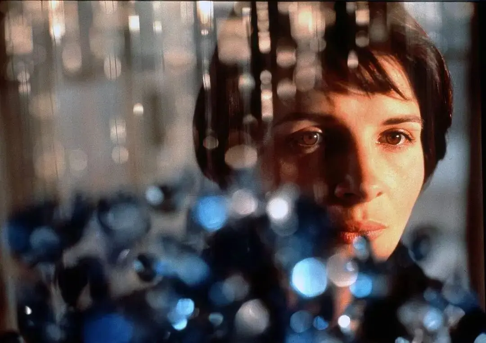

截至目前。
全国累计报告确诊病例34598例，累计死亡病例723例，累计治愈出院2052例。
我不知道大家看了这些数字有什么感受。
深处困境中的人也许已经没有心力再来看这些数字。
旁观的人也许早已经麻木。
诺贝尔文学奖得主斯维特兰娜•阿列克谢耶维奇曾在她的作品中写道：
我时常觉得，简单和呆板的事实，不见得会比人们模糊的感受、传言和想象更接近真相。
为什么要强调这些事实呢，这只会掩盖我们的感受而已。
从事实当中衍生出的这些感受，以及这些感受的演变过程，才是令我着迷的。
我会试着找出这些感受，收集这些感受，并将其仔细保护起来。
这也是我的担心。
这段时间我们看到了太多触目惊心的故事。
这里面有十足的兽性，也有十足的人性。
我真的害怕，事情过后，这些复杂都隐藏在那些空洞冰凉的数字当中。
所以，在好友时荣光的倡议下，我们决定效仿斯维特兰娜•阿列克谢耶维奇，将大家的感受收集下来。
因此，我们怀着极大的使命感和诚意向大家发起一项全民拍摄计划：《2月9日，我，我们》。
为什么要强调2月9日。
强调时间是为了让时间具有仪式感。
2月9日零点到24点，选择任何一个时刻，在这个时刻你可以完成一场发自内心的真实告白。
可以是遗言，可以是回忆录，可以是感谢，可以是抱歉，可以是咒骂。
也许，是面对窗户一分钟的沉默。
也许是一声长长的叹息。
也许是一段隐秘的回忆。
也许你已经恐惧至极发不出声音，那零点的那团深不见底的黑暗已经表达了一切。
或者，吱吱作响的病床、窗户的雨滴、路上的横幅、灰暗的天空、马桶里被一冲就走的一切。
也许是2月9日的第一缕阳光。
也许是对一线医护人员的问候。
也许是一家人坐在一起吃饭。
也许是孩子的一个微笑。
也许你已经疾驰在上班的路上，城市、路人、天空都可以成为你的拍摄对象。
.....
总之，这个拍摄计划中，在那个时刻里。
你既是导演，也是摄影师，更是唯一的主角。
无论是感受，还是日常化的生活画面。
只要是真实的，不做作的，都是值得记录的。
我们会将2月9日所有参与者的视频进行剪辑，来和大家共同完成这部笼罩在瘟疫阴影下的作品。
我们太习惯将焦点放在个别英雄身上，常常忘记普罗百姓的哀嚎、感动和真实。
所以，这次的全民纪实将会是最宝贵的一次记录。
我们需要和你一起共同记录和创作。
以下为具体拍摄要求：
拍摄时间：2月9日任何一个时间点
拍摄内容：不限
拍摄时长：建议0-3分钟，具体时长不限。
拍摄方式：采用横屏拍摄，无需剪辑，无需压缩
投稿方式：任选其一，并注明拍摄者姓名或昵称+拍摄时间+地点：
示例：李大虾+2月9日凌晨三点+上海
1，如果您的视频没有超过五分钟，可以直接发到六百击公众号的后台，具体操作可参见如下：
再次提示，发送时一定要选择“原图”。
视频发送后，可以再发送一个视频信息：李大虾+2月9日凌晨三点+上海。
2、如果您的视频时长较长，可采用以下方式发送给我们：
1）自己上传百度云，然后将分享链接发送至六百击后台。
2）发送至邮箱154702452@qq.com
3）联系微信 rocky-shih
截稿日期：2020年2月10日24:00。
特别提醒：本次征稿为公益征稿，非商业用途，仅以纪念这个重要时期的人与事，记录下真实复杂的感受。视频使用权归接收方所有，投稿视为同意。
这里没有挑逗你眼目情欲的小鲜肉
也没有挑动你肉体情欲的段子
更没有膨胀你今生骄傲的鸡血
我们只在乎那些最质朴真诚的作品
在那里我们才能恢复真正的想象力
我们也坚信这才是我们真正需要的

ID:Six_hundred_hits
长按二维码，一键关注
【六百击】
电影评论
尽情分享朋友圈